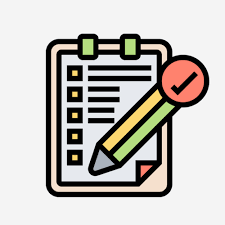

Diseño de página principal
Una página con navegación, secciones informativas, multimedia, formularios y enlaces a páginas internas.
Objetivo: practicar estructura semántica con HTML antes de aplicar estilos avanzados.
Una muestra de proyectos, habilidades y resultados de aprendizaje en desarrollo web.
Este portafolio presenta mi trayectoria en desarrollo web, las habilidades adquiridas y los proyectos creados durante la práctica con HTML y CSS.
El diseño sigue el estilo general del proyecto PracticaCSSFinal usando estructura semántica y rutas relativas correctas.
Una página con navegación, secciones informativas, multimedia, formularios y enlaces a páginas internas.
Objetivo: practicar estructura semántica con HTML antes de aplicar estilos avanzados.

Implementación de un formulario que envía datos con el método GET hacia una página de resultados. Incluye selección, casillas y validación básica.
Objetivo: comprender cómo funcionan los datos en la URL y practicar páginas internas.
Página dedicada a mostrar el avance de aprendizaje, las habilidades en HTML y CSS, y los resultados esperados.
Objetivo: crear un documento propio que complemente el contenido del proyecto base.
| Habilidad | Descripción | Progreso |
|---|---|---|
| HTML semántico | Uso correcto de etiquetas como header, nav, section, article y footer. | 90% |
| CSS básico | Estilos compartidos en general.css y estilos específicos en portafolio.css. | 75% |
| Multimedia | Integración de imágenes, audio y video con rutas relativas y atributos adecuados. | 80% |
| Formularios | Creación de formularios con campos, botón de envío y validación HTML. | 70% |
En esta página se refuerza el uso de etiquetas semánticas, el diseño de bloques de contenido y la organización de una página coherente con el resto del sitio.
Además, se practica la creación de un nuevo archivo CSS dedicado que mantiene la identidad visual del proyecto original.